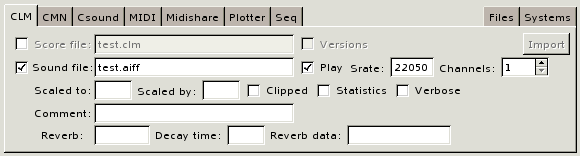
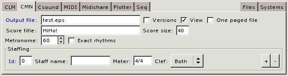
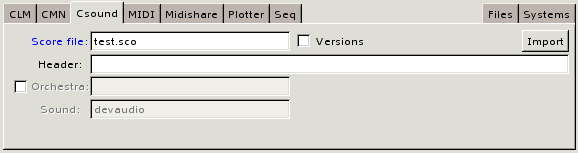
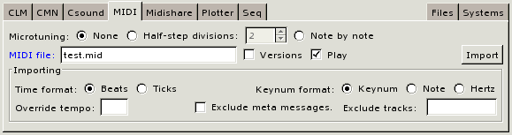
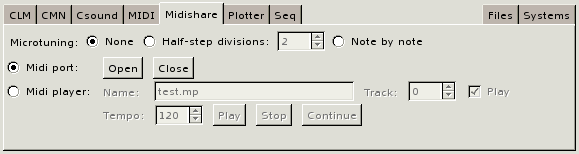
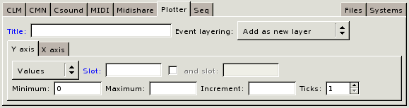
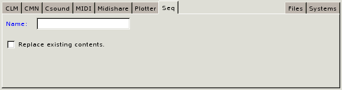
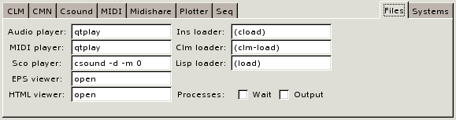
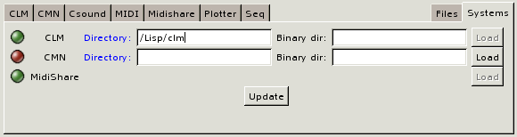
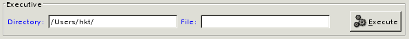

- [Topic]
- CMIO
Which sound applications (called targets in the window) are actually active at any given time depends on what programs are installed on the host computer and also what software systems have been loaded into Common Music. These system do not have to be loaded ahead of musical experimentation; the window's Systems and Files pages permit external software such as CLM, CMN and Midishare to be dynamically configured and loaded at any appropriate point in the working process.
To render musical events to a sound application the user provides an expression that produces events, selects a target application, and presses the Compose button. Each application page has numerous fields for customizing behavior. These fields can be set to different values in the interface whenever the Compose button is pressed and can be initialized to a user's preference by passing appropriate arguments to the cmio function when the window is created.
Window Layout
A CMIO window consists of four components arranged from top to bottom in the window:
- A Sources notebook holds tabbed pages that relate to creating and generating event data.
- A Targets notebook holds tab pages related to sound synthesis and display applications.
- An Executive frame manages the system's current working directory and (possibly) a current target file.
- A Status line displays color coded information about ongoing actions in the window.
Each tabbed page contains a set of fields representing the input/output features of a given application or task. The right-justified pages (such as Help or Systems) control more general features of the window or in the surrounding Lisp environment.
Example 1. The four components of a CMIO window: Sources, Targets, Executive and the Status line. Event IO is the currently active source page and Midi is the currently selected target.
![[cmio1.png]](cmio1.png)
Color highlighting provides some visual clues as to how information on a page is interpreted by the interface:
- Blue labels mark required fields that must contain information before a page can execute.
- Yellow backgrounds indicate fields that will be evaluated by Lisp when the information is accessed.
- White backgrounds indicate fields that either contain uninterpreted text or are read to produce a Lisp value. It is possible to force evaluation in a white field using the #.expr notation, where expr is a Lisp expression to be evaled to produce the contents of the field.
- The Status line uses colors to classify the type of message displayed: green represents a normal information, yellow indicates a warning or notification, red signifies an error condition.
Notebooks and Pages
Each application, or task, is represented by a tabbed notebook page inside the window. The pages of the Sources notebook relate to the creation of source material in CM: generating musical event data and defining aggregate structure with seq containers. The Targets notebook pages define various "destinations" that musical data can be rendered to or imported from. The following sections briefly describe the layout and functionality of each Notebook's pages.
Sources Notebook
Containers
The Containers page is used to create, rename and delete seq containers.
![[cmio2.png]](cmio2.png)
- The Containers menu contains all of the existing named seq objects. Selecting a seq from the menu places it in the name buffer for editing.
- The Name buffer can be set to the name of a sequence to edit or create.
- The New button creates a sequence using the name specified in the name buffer.
- The Rename button renames the currently selected seq in the Containers menu to the name in the edit buffer.
- The Delete button deletes the seq listed in the name buffer as well as all of its subobjects.
- The Update button refills the Containers menu with any new seq objects created outside the window, for example in the Lisp REPL or another CMIO window.
Event IO
The Event IO page is used to generate musical events to and from the currently selected target page. Using the Event IO page in conjunction with the current target page is equivalent to calling the events function in the REPL.
![[cmio3.png]](cmio3.png)
- The Events buffer must be set to a valid Lisp expression that, when evaluated, produces musical events to schedule in the currently selected target page. This buffer is equivalent to the first argument to the events function.
- The Starts buffer contains a number or list of numbers specifying the start time offset of the events in the target score. This buffer is equivalent to the optional third argument to the events function. If no start time offset if provided it defaults to zero. It is sometimes useful to specify a negative offset. For example, to render a selection that starts at time 10 in a plotter window at time 0 in the score, specify a -10 offset in the Starts buffer.
- The Compose button renders the musical events to the currently selected target page.
Help
The Help page is not yet implemented.
Targets Notebook
CLM
The CLM page manages input and output to CLM score files and CLM audio files.

- If Score File is checked then output will include creating the .clm score file named in the associated buffer.
- If Versions is checked then a number will be appended to the output file name so that previous versions of the file will not be not overwritten.
- The Import button will import the .clm score named in the Executive's File buffer and the imported seq will automatically be placed in the Events buffer on the Event IO page.
- If Sound file is checked then output will include writing the audio file (.snd, .aiff or .wav) named in the associated buffer.
- If Play is checked then the audio file will be played automatically after it is written. See the Files page for more information.
The remaining fields on the page are specific to CLM audio files, see the CLM documentation on with-sound for more information.
CMN
The CMN page manages output to CMN score files and EPS files.

- The Output file buffer holds the name of the .cmn or .eps file to output.
- If Versions is checked then a number will be appended to the output file name so that previous versions of the file will not be not overwritten.
- If View is checked then the .eps file will be viewed automatically after it is written. See the Files page for more information.
- If One paged file is checked then CMN will create one eps file to hold the entire manuscript otherwise it will generate one eps file per page of the manuscript.
- The remaining fields on the page are CMN score options, consult the documentation on CMN streams for more information.
Csound
The Csound page manages IO to CSound score files and audio files.

- The Score file buffer holds the name of the .sco file to output.
- If Versions is checked then a number will be appended to the output file name so that previous versions of the file will not be not overwritten.
- If View is checked then the .eps file will be viewed automatically after it is written. See the Files page for more information.
- The Import button will import the .sco score named in the Executive's File buffer and the imported seq will automatically be placed in the Events buffer on the Event IO page.
- If Header is supplied then it will be written as the header of the output .sco file. To include a long header, set a Lisp variable var to the header string and specify #.var as the value of the buffer.
- If Orchestra is checked the the buffer should contain the name of the .orc file to use and Sound output is enabled. See the Files page for information about configuring the Csound command and audio playback.
MIDI
The MIDI page ...

- If Microtuning is enabled then floating point key numbers in event data will be interpreted as microtonal adjustments on MIDI keynum values. See the documentation on channel tuning for more information.
- The MIDI file buffer holds the name of the .mid file to output.
- If Versions is checked then a number will be appended to the output file name so that previous versions of the file will not be not overwritten.
- If Play is checked then the .mid file will be played automatically after it is written. See the Files page for more information.
- The Import button will import the .mid file listed in the Executive's file buffer according to the values of the Importing fields. The imported material will be placed in the Events buffer on the Event IO page. See the documentation on import-events for information about the importing fields.
Midishare
The Midishare page ...

Plotter
The Plotter page ...

Seq
The Seq page ...

Files
The Files page ...

Systems
The Systems page ...

The Executive
The Executive page ...

Error Handling and Notification
A CMIO window facilitates musical tasks that would otherwise be
accomplished by evaluating expressions inside the Lisp REPL
window. Under normal conditions, lisp evaluation errors will cause the
REPL to stop execution in an error break. But the CMIO
window executes via foreign function (GTK) callbacks that do not
expect the flow of control to be interrupted. As a result, Lisp error
breaks inside CMIO will likely cause the window to freeze and —
in some cases — may even cause the Lisp session to abruptly
terminate. For this reason the CMIO window evaluate CM function calls
calls in such a way that error messages are reported in the message
line without triggering a Lisp error break. If you need to enter the
Lisp break loop in order to debug a problem then set the global
variable *cm-break-on-errors* to true, but realize that
once the break condition is resolved the CMIO window (and possibly the
whole GTK session) may no longer work.